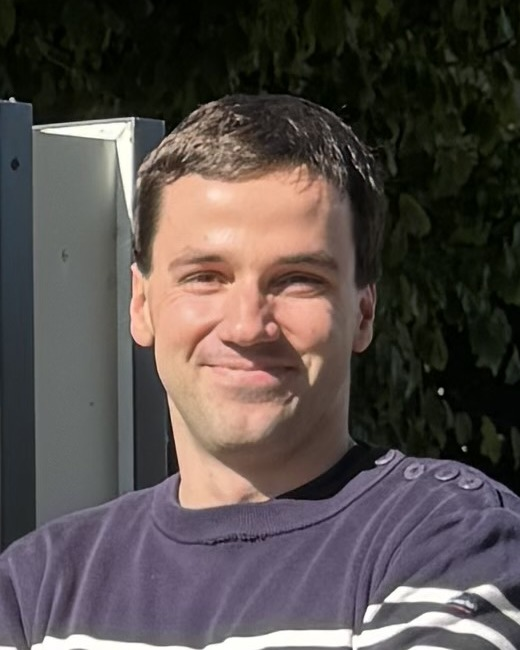

About
I am a master's student in computer science at ETH Zürich, majoring in machine intelligence with a minor in theoretical computer science. My interests are optimization theory and statistical guarantees for machine learning.
In 2026, I researched sequence models at IBM Research – Zurich. The year before, I interned at the European Space Agency. Niao He supervised my bachelor's thesis.

Experience
- Mar – Sep 2026
- IBM Research – Zurich, Rüschlikon Research on sequence models.
- Jul – Dec 2025
- European Space Agency, European Space Operations Centre, Darmstadt Research internship on time and frequency metrology for spacecraft health monitoring.
- Feb – Aug 2024
- Optimization and Decision Intelligence Group, ETH Zürich Bachelor's thesis.
Teaching
Teaching assistant at ETH Zürich since 2023.
- 2025 – 2026
- Data Science and Machine Learning (Spring 2025, Spring 2026, Fall 2026)
- Spring 2024
- Information Theory
- Fall 2023
- Numerical Methods for Computer Science